| SOURCE | TITLE| IMAGE MATCH | click to source page |
| eBay | ROMANIA STAMP 1920-1922 King Ferdinand I 2L (KBX) | eBay | 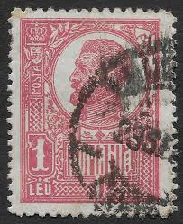 |
| stampsandstuff.net | Stamps from Romania 1920-1929 | 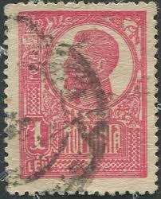 |
| eBay | Hungary 1871 Sc# 3a Well Centered, VF stamp | eBay | 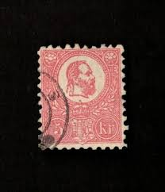 |
| safnari | 7 (Reykir 2) on 4 aur Christian IX Facit 300 Iceland 7 Stamp | 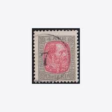 |
| eBay | Liechtenstein 1917, Mi 7 Used Cat 4,4€ | eBay | 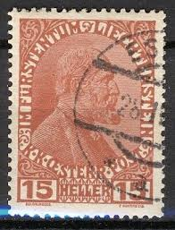 |
| eBay | Trains, Railroads Fiscal, Revenue Stamps for sale | eBay | 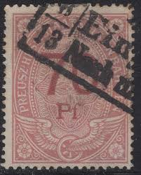 |
| USPhila.com | US Stamp Values Scott Catalogue # 368: 1909 2c Lincoln Imperf | 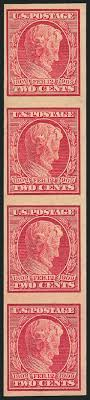 |
| eBay | Tasmania Stamps for sale | eBay | 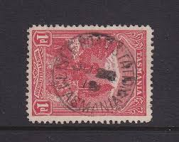 |
| Notando.is | NUMERAL CANCELS | stampauction.is | 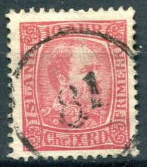 |
| CollectorBazar | AUSTRIA EARLY HEAD ISSUE 5 Kr PAIR FINE WEIN USED | 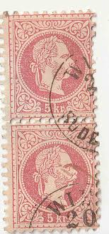 |
| safnari | Home Page | Safnarasíðan | 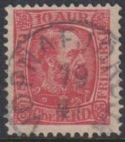 |
| HipStamp | Austria - 1876 - Scott #36 - used on piece - NEUNKIRCHEN pmk | Europe - Austria, General Issue Stamp / HipStamp | 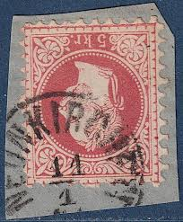 |
| safnari | 144 (Gröf 1) on 10 aur Chr IX Iceland 144 Stamp Cancelled | 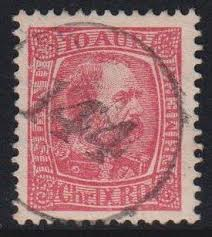 |
| eBay | LIECHTENSTEIN SCOTT# 2a MH F-VF LOT# 77735 | eBay | 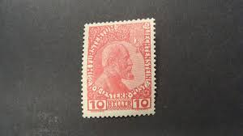 |
| eBay | AUSTRALIA 1918, 1931, VARIETY: INVERTED WMK, 2 STAMPS | eBay | 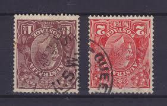 |
| JF-Stamps | Numeral cancellations | JF Stamps Danmark | 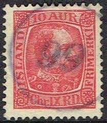 |
| Alamy | A rare portrait of german Emperor and King of Prussien WILHELM II HOHENZOLLERN ( 1859 - 1941 ) without military dress but with military decoration Stock Photo - Alamy | 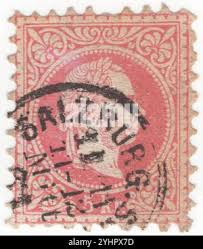 |
| Notando.is | NUMERAL CANCELS | stampauction.is | 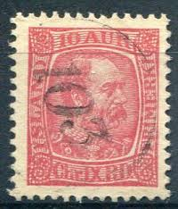 |
| safnari | 144 (Gröf 1) on 10 aur Chr IX Iceland 144 Stamp Cancelled | 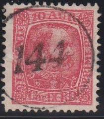 |
| Stamp Community Forum | Kustenland, The Austrian Littoral - Stamp Community Forum | 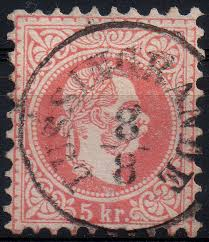 |
| safnari | Home Page | Safnarasíðan | 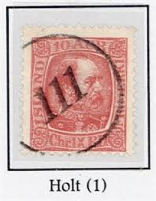 |
| Amazon.com | Amazon.com: Soviet Union 1656a unmounted Mint/Never hinged ** MNH 1952 Orthes The USSR (Stamps for Collectors) Military/Knight : Toys & Games | 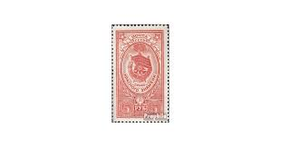 |
| Invaluable.com | Sold at Auction: EARLY HAWAII STAMP | 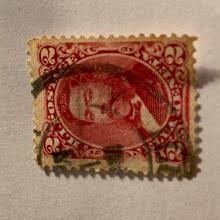 |
| Stamp Auction | Daniel F. Kelleher Auctions, LLC Sale - 682 Page 16 | 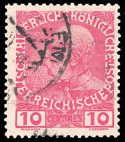 |
| eBay | Romania 1920 King Ferdinand,10 Bani,CAP MARE,Mi.253,War Paper,Perf 11.5/11.5 | eBay | 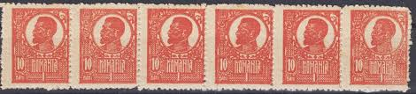 |
| eBay | Liechtenstein Scott # 2 VF Used 1912 10 Heller Prince Johann II | eBay | 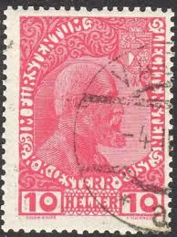 |
| eBay | ICELAND CROWN & POSTHORN CANCEL, (STADA)RSTADUR ON 10aur Chr IX | eBay | 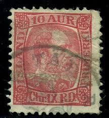 |
| HipStamp | Germany 68 1902 Used | Europe - Germany & Colonies - Germany, General Issue Stamp / HipStamp | 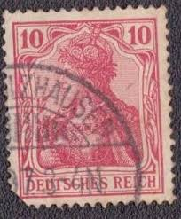 |
| safnari | Home Page | Safnarasíðan | 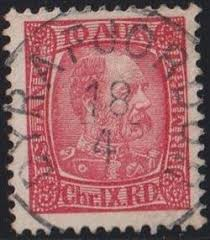 |
| safnari | Home Page | Safnarasíðan | 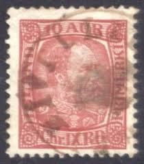 |
| PICRYL | 28 1871 stamps of hungary Images: PICRYL - Public Domain Media Search Engine Public Domain Search | 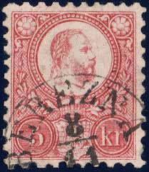 |
| eBay | harbin: LIECHTENSTEIN 1917 SC#6,#7 & #9 SET OF 3 (CTO) ORIGINAL GUM LH | eBay | 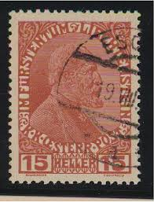 |
| eBay | TASMANIA, SOUTH-ARM cds., 1911 1d. Pictorial. | eBay | 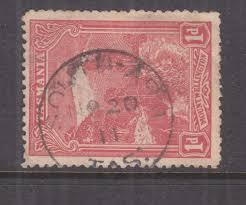 |
| World Stamps Project | Great Britain, George V: Varieties of Postage Stamps – World Stamps Project | 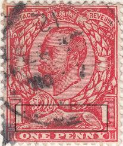 |
| Delcampe | Germany - GERMANIA-1 1/4 M -MICHEL 151 Y-RARE-POSTMARK BERLIN-DEUTSCHES REICH-GERMANY-1920 | 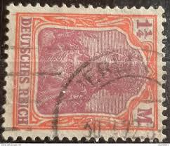 |
| safnari | 83 (Reynistaður) on 10 aur Chr IX Iceland 83 Stamp Cancelled | 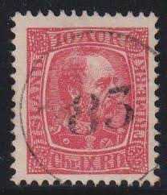 |
| Leski Auctions | Stamps & Postal History | 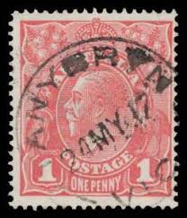 |
| eBay | Liechtenstein SC 2 VFU (9ehc) | eBay | 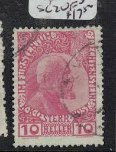 |
| eBay | BOSNIA & HERZEGOVINA EMPEROR FRANZ JOSEF ( MY REF CENT.EUR) 15 RED | eBay | 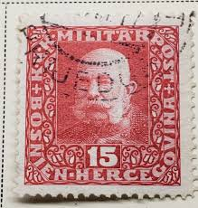 |
| Notando.is | NUMERAL CANCELS | stampauction.is | 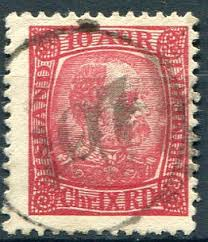 |
| eBay | 1903 VIC Victoria Australia QV 9d Red "Postage" JAMIESON Cancel | eBay | 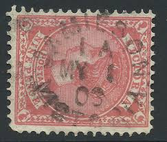 |
| eBay | Liechtenstein 2y ordinary Paper with hinge 1912 Postage stamp (9789255 | eBay | 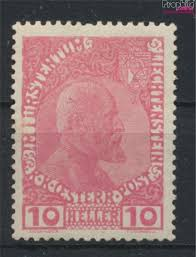 |
| safnari | 135 (Hvammur 3) on 10 aur Chr IX Iceland 135 Stamp Cancelled | 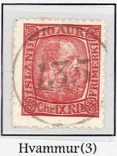 |
| NFVS | iceland Philatelic magazine | 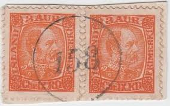 |
| HipStamp | Austria 1867 Early Franz Joseph Issue Fine Used 5Kr. NW-106871 | Europe - Austria, Stamp / HipStamp | 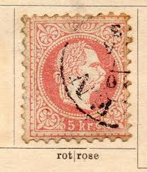 |
| safnari | 109 (Garðsstaðir) on 10 aur Christian IX Iceland 109 Stamp | 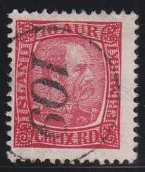 |
| safnari | 160 (Hvalsnes) on 10 aur Christian X Facit 300 or ca 4 500 ISK | 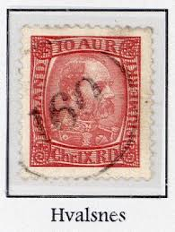 |
| eBay | ITALY 1908 - Sassone n.82 Misperforation Priting Flaw Error Strip Mint OG **/* | eBay | 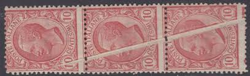 |
| eBay | 1906 ITALY STAMPS PAIR WITH PERTUSIO TURIN SON CANCEL | eBay | 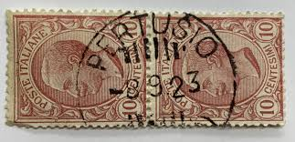 |
| Blogger.com | Big Blue 1840-1940: The Austrian 1867-1884 5 Kreuzer rose stamp: Coarse, Fine, Types, and Ears | 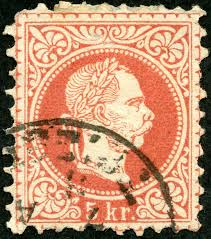 |
| eBay | ÖSTERREICH 1867 5kr, FINGERHUTSTEMPEL SALESEL (B) Kl:35P! Schön! | eBay | |
| Notando.is | NUMERAL CANCELS | stampauction.is | |
| CollectorBazar | BRITISH INDIA JAISALMER STATE KING PORTRAIT ELEPHANT 1 ONE ANNA COIN IMAGE RECEIPT REVENUE COURT FEE | |
| eBay | NEW ZEALAND OTUREHUA (DN) 'G' CLASS POSTMARK (ID:029/D44662) | eBay | |
| safnari | ÞINGEYJARSÝSLA on 10 aur Christian IX Iceland 29 Stamp Cancelled | |
| safnari | 97 (Hvammstangi) on 10 aur Christian IX Iceland 97 Stamp | |
| eBay | GERMANY BAVARIA SC# 54 VF USED STAMP FREE SHIPPING USA | eBay | |
| DealBid | Browse Listings in Stamps > Europe > Liechtenstein - 40 items per page - Ending Soon | DealBid | |
| eBay | United States Postage Vermont Sesquicentennial Celebrating Stamp 150y | eBay |